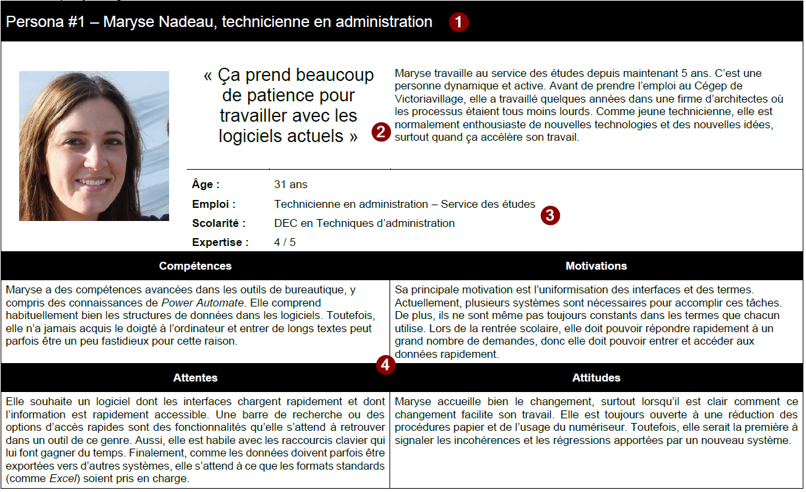
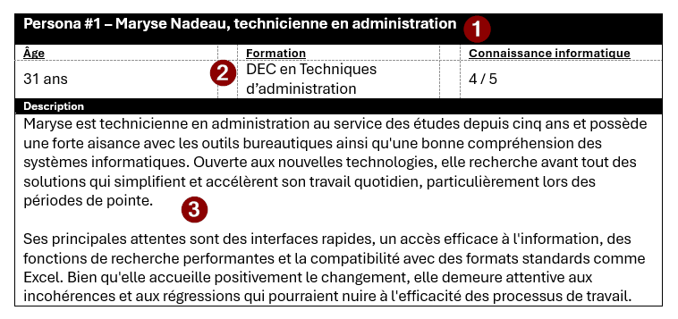

Entitée actrices, descriptions et persona
Contenus de la page
3-1 Analyse des données pour concevoir le diagramme de classe
3-7 Mise en application pratique de l'ensemble des principes d’une méthode d’analyse
4-2 Description et explication des cas d'utilisation
4-4 Compréhension des points importants du dossier de conception
Temps requis
20 minutes
À propos de la page

Les types d'entité actrice
Trois niveau d'entités actrices existent dans le système, selon leur niveau d'implication dans celui-ci. Catégoriser correctement les entités actrices permet d'orienter ensuite les efforts de développment pour répondre aux bonnes préoccupations. Souvent, cela aide aussi dans la gestion des privilèges et l'organisation des droits dans le système.
Primaire- Elles interagissent directement sur le système et constitue ses principales personnes utilisatrices. Si l'une de ces entités est retirée du système, celui perd une partie ou une totalité de sa raison d'être ou de sa viabilité. La raison d'être d'un système dépasse le simple besoin technique (par exemple, retirer les responsables de l'administration du système compromet la viabilité du système, mais uniquement d'un point de vue technique, la pertinence derrière le développement du système n'en est pas affecté).
Secondaire- Leur présence ou les actions qu'elles accomplissenet ont un impact sur l'opération du système et de ses fonctionnalités. Ce sont des entitées qui peuvent réaliser certain des cas d'utilisation du système, mais elles pourraient être retirées du système qu'avec un impact minimal sur les fonctionnalités. Les sous-systèmes ou les autres systèmes qui agissent comme entité actrice agisse, à moins de cas exceptionnels, comme entité actrice secondaire.
Parties prenantes- Toute personne qui a de l'intérêt dans les tâches réalisées par le système. Il peut s'agir de gestionnaires, d'organismes ou de groupes de personnes pour lequel l'existence et l'utilisation du système a un impact notable, sans qu'elles l'utilisent elles-mêmes.
À quel type assignée une entité qui peut correspondre à plusieurs ?
La réponse est simple : toujours le type le plus important en termes de participation dans le système. Donc une entité qui serait à la fois primaire et partie prenante (comme une personne dirigeante d'une entreprise avec des accès à un système qu'elle utilise régulièrement) est entité actrice primaire.
Identifier les entités actrices dans le texte suivant
Le patron de la banque KC souhaite développer une application mobile pour permettre aux clients et aux clientes de consulter leur compte bancaire. L'interface devra toujours afficher un code d'erreur clair en cas d'erreur de connexion pour aider le soutien technique du service à la clientèle à comprendre les problèmes lors d'éventuels appels des clients et clientes.
Quels sont les acteurs et de quel type sont-ils respectivement ?
Réponse
Primaire : Clients et clientes de la banque
Secondaire : Soutien technique
Partie prenante : patron de la banque ou la banque
Artefact pour décrire les entités actrices
3 artefacts sont utilisés pour la description des entités actrices.
Liste des entités actrices
La liste des entités actrices présente, généralement sous forme de tableau, toutes les entités actrices du système ainsi que leur type. La description formelle se retrouve aussi dans cette liste.
Description formelle
La description formelle prend la forme d'un paragraphe qui renseigne sur un type d'entité d'actrice. Comme elle fait ressortir les points communs et importants à toutes les entités du même type, on peut les associer facilement à des rôles dans le système. C'est généralement la plus utile du point de vue de la logique métier. On évite les descriptions vide de sens comme « personne utilisatrice » : « personne qui utilise le système. ». Si l'entité hérite d'une autre, alors on le précise également dans la description.
Personas
La méthode des personas demande d'abord de définir des [archétypes]{Incarnation des caractéristiques communes dans un groupe à l'un des membres du groupe|medium} de personnes utilisatrices potentielles. On peut les définir avec les résultats d'enquêtes de marché (marketing) ou au fil de discussions avec de réels futures personnes utilisatrices. Elles sont également utiles pour l'analyse et la préparation de l'Interface Humain-Machine (IHM). Il est important que les personas soient :
- Précis : pour définir des façons claires de répondre aux besoins des personnes utilisatrices représentées dans ce persona;
- Imaginaire pour ne pas caricaturer une personne réelle et ainsi perdre une partie de l'information ou devenir anecdotique, hyperbolique ou tout autre représentation fautive du groupe;
- Différent des autres personas pour la catégorie d'entité actrice afin de diversifier les caractéristiques identifiées et s'assurer de répondre aux besoins du plus grand nombre; et
- Faillible, car personne ne présente que des caractéristiques et des besoins simples et tous présentent des défis et des particularités desquelles il faut tenir compte.
Les personas sont très utilisés pour le design de l'interface utilisateur. Ils peuvent à l'occasion amener l'équipe à inclure des cas d'utilisation supplémentaires (ou plus souvent des extensions ou des spécifications non fonctionnelles) pour tenir compte de besoins spécifiques à certains groupes d'utilisateurs.
Inspiration pour les personas
L'utilisation d'intelligence artificielle génératrice peut aider à s'inspirer pour la rédaction de persona, en particulier lorsque les entrevues avec des réelles personnes utilisatrices sont difficiles ou impossibles. Pour améliorer les résultats obtenus, faites générer quelques profils et agréger l'information obtenue en un persona.
Les persona peuvent être décrits de façon longue ou abrégée.
Persona long


- Identification : Indique le numéro du personna, son nom, sa fonction (emploi) et un image le représentant
- Résumé : Comporte une citation qui démontre les valeurs importantes pour le persona ainsi qu'un résumé en quelques phrases de ses principales caractéristiques.
- Caractéristiques : Présente les principales caractéristiques du persona dont l'âge, son emploi, sa formation et son expertise avec les outils informatiques.
- Détails du persona : Décrit en détail les quatre aspects du persona qui orienteront le développement du système :
- Compétences : comporte une courte description outils informatiques connus et du niveau de compétence dans l'utilisation de chacun. Il est aussi possible d'y intégrer une description du degré d'aisance avec l'informatique en général.
- Motivations : explique pourquoi cette personne souhaite avoir le système, comment cela modifira-t-il sa façon de travailler, son environnement de travail ou les tâches qu'elle doit accomplir.
- Attentes : présente les grandes lignes des fonctionnalités qui seront les plus utiles à cette personne. Les attentes ne sont pas nécessairement des fonctionnalités qui seront implémentées, mais plutôt des souhaits de fonctionnalité.
- Attitudes : ressenti et posture de la personne face aux technologies et aux changements apportés par le développement du système.
Persona abrégé


- Identification : Indique le numréo du personna, son nom et sa fonction (emploi)
- Caractéristiques : Présente les principales caractéristiques du persona dont l'âge, sa formation et son expertise avec les outils informatiques.
- Description sommaire : Décrit le persona en un paragraphe. On y traite principalement des motivations et attentes du persona. Des détails de ces définitions sont donnés à la section détails des persona longs
Modèles de persona
Des modèles de persona sont disponibles dans l'équipe Teams du cours.